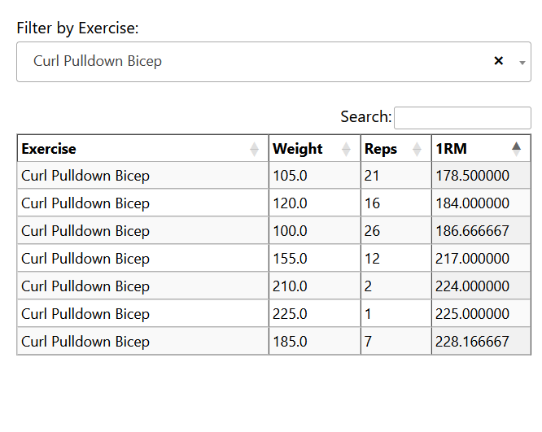

Data-Driven Progressive Overload
kaiserlift software package to do it yourself (pip installable)
Why keep doing 10 rep sets? Are you pushing in a smart way?
The core idea I’m exploring is simple: I want a science-based system for determining what’s the best workout to do next if your goal is muscle growth. The foundation of this is progressive overload—the principle that muscles grow when you consistently challenge them beyond what they’re used to.
One of the most effective ways to apply progressive overload is by taking sets to failure. But doing that intelligently requires knowing what you’ve done before. If you have a record of your best sets on a given exercise, you can deliberately aim to push past those PRs. That history becomes your benchmark.

Now, there’s another dimension to this: rep range adaptation. If you always train for, say, 10 reps, your muscles can get used to that rep range—even if you’re still pushing for PRs. Switching things up and going for, say, 20-rep maxes (even with lighter weight) can stimulate growth by forcing the muscle to adapt to new challenges. Then, when you go back to 10 reps, you might find you’ve blown through a plateau.
To make this system more precise, I propose using a one-rep max (1RM) equivalence formula—a way of mapping rep and weight combinations onto a single curve. It gives you a way to compare different PRs across rep ranges. Using that, you can identify which rep range you’re weakest in—meaning, which PR has the lowest 1RM equivalent. That’s where your next opportunity lies.

Here's how I operationalize it:
- Collect your full workout history for a given exercise—every weight and rep combo you’ve done.
- Calculate the Pareto front of that data. This is the set of “non-dominated” performances: the heaviest weights at each rep range that can’t be beaten in both weight and reps at the same time.
- For each point on the Pareto front, compute the 1RM equivalent using a decay-style formula.
- Identify the Pareto front point with the lowest 1RM equivalent—that’s your weakest spot.
- Now, generate a “next step” PR target: a new set that just barely beats that weakest point, by the smallest reasonable margin (e.g., +1 rep or +5 lbs). That becomes your next workout goal.
This method gives you a structured, data-driven way to chase the easiest possible PR—which is still a PR. That keeps you progressing without burning out.
You can extend this concept across exercises too. Let’s say it’s biceps day. Instead of defaulting to the same curl variation you always do, you can rotate in a bicep exercise you haven’t done recently in order to assure a new PR. This introduces variability, which is another powerful way to drive adaptation while still targeting the same muscle group.

The end goal here is simple: use your data to intelligently apply progressive overload, break through plateaus, and train more effectively—with zero guesswork.
To this end I also made an HTML page that can organize these in a text searchable way and can be accessed from my phone at the gym. This table of taget sets can be ordered by 1RPM and so easilly parsed.
Bayesian Rating Comparison Calculator
What's better; a 5-star product with 10 reviews or a 4.7-star with 1,000?
This Bayesian Rating Comparison Calculator is designed to help you compare two items based on their five-star ratings and number of ratings, utilizing an advanced Bayesian average calculation for a more accurate comparison. Now with the option to customize the system's average rating and total votes!
Item 1
Item 2
You have the option to refine your comparison by specifying a system-wide average rating and total number of votes. This is particularly useful if you're comparing items within a larger dataset and want to account for the overall average rating and vote count. Utilizing the optional average rating and total votes fields can provide a more nuanced comparison, especially in cases where the number of ratings significantly varies between items or when comparing items against a broader context.
Globals (optional)
Woodworking
Poker Table
Cambridge, MA 2020
Built over covid shutdown. First time working with foam and upholstry. Design by Adam Savage at Tested.

Ping Pong Table
Palo Alto, CA 2018
Dinner Table
Palo Alto, CA 2017
Built out of a single sheet of 4x8' 3/4" plywood. Design by Benjamin Uyeda at Homemade Modern.